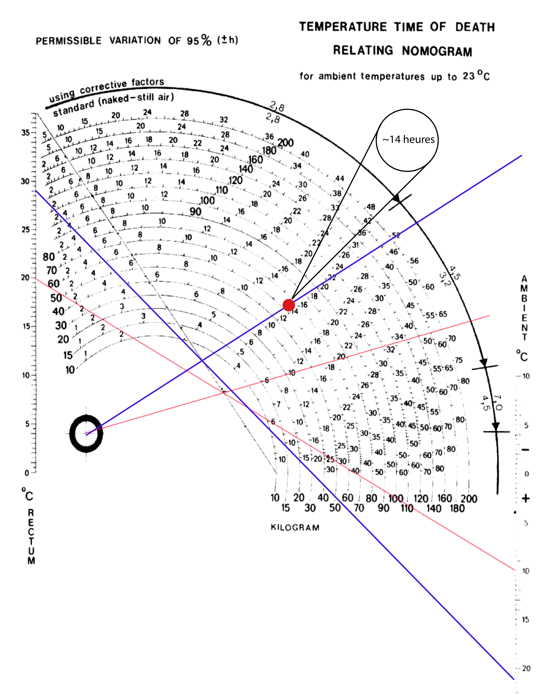

Température
Grâce aux archives des températures de Paris, nous avons trouvés non seulement la chaleure du matin du 12 septembre, jour du crime, mais aussi la vitesse du vent et si il pleuvait. En effet, entre 10 heure le 11 septembre et 7 heure le 12, heure à laquelle le corps a été trouvé, la température moyenne de l'air était de 21 °C. Il ne pleuvait pas, et le vent moyen était de 7km/h, donc de l'air en mouvement.
Calculs
Avec ces données et les informations du livret, nous avons utilisé le nomogramme de Henssge pour trouver une approximation de l'heure du décès. L'homme pesait 66kg, était habillé modérément et l'air était en mouvement, ce qui donne un facteur correctif de 1,2. Pour compléter le nomogramme, il faut d'abord relier la température du corps (l'axe de gauche) avec la température ambiente (l'axe de droite), puis on trace la droite partant du point marqué, passant par le croisement entre notre première droite et une droite pré-défini. Pour trouver quand l'homme a été tué, il faut lire sur l'arc correspondant à son poid l'heure marquée. Il faut en suite appliquer le facteur correctif a cette heure trouvée, donc 14h x 1.2 = 16,8.
Temps de mort
Utilisant le nomogramme de Henssge et en ajoutant un intervalle de confiance de ~4,5 heures, nous avons alors trouvé que l'homme a été tué entre 21 heures et 12 heure avant la prise de température.